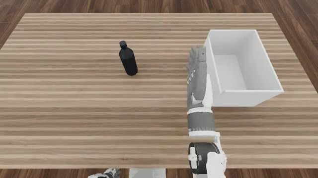
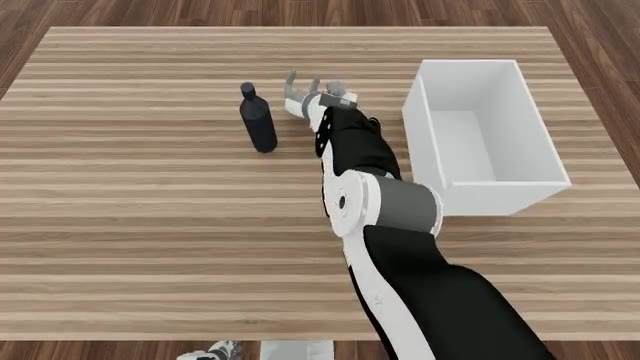

01The result, in one clip
Dex-PointWAM in closed loop (ego head-camera view). The arm travels straight from its rest pose to the bottle and the fingers arrive on the object — a sensible, purposeful reach. This is what "말이 되는 움직임" (a motion that makes sense) looks like, and it is the milestone we set out to hit.




02Goal
Make Dex-PointWAM succeed in the sim "like DPP" — at minimum produce a sensible motion (no weird thrashing), and ideally reach DPP-level task success. Three tiers:
- ✓Tier-0 — sensible reach.The arm moves purposefully toward the object instead of spinning in place.
- ✗Tier-1 — DPP-level success.
success_at_endcomparable to the DPP baseline on the same objects/seed. - ·Tier-2 — iterate up.Once succeeding, push the success rate higher.
03Before → after
The starting point (07-22) was a hand that just rotated in place and never reached — 0/24 on every object. Two deploy-side bugs were masking the model's real behavior. Fixing them revived the reach.
before · 07-22 rotate-in-place
after · 07-28 sensible reach
04What we fixed
Every fix is deploy-side (bridge / policy / launcher) — the WIP model files were never touched.
- ✓Rate bug — 2× too-fast replay.The policy advanced one predicted step per control step (
si = t % Q), replaying a 10-step chunk at twice its recorded speed. Each predicted step is now held for the right number of control steps, and the playback code asserts the ratio is an exact integer rather than rounding. The seconds originally quoted here are withdrawn — the source rate is not settled (see the 08-02 log, §05); spans are stated in raw frames. - ✓Phantom-hand mask.The bimanual model was attending to a zero-padded idle hand. Masking it via
robot_existsis what actually revived the reach — this was the true cause of the 07-22 "rotate collapse", not a training problem. - ✓Reach telemetry.Added a per-chunk
[pwam-disp]log of net predicted wrist displacement — turned "it rotates" into a measurable 14 cm→4 cm reach signal. - ✓Contact-head finetune + grip wiring.Trained a per-finger contact head (
contact_ft, robot_l2 3.5 cm), made the bridge return it and the policy drive a DPP-style grip ramp. The head fires strongly — but grip alone does not recover the grasp (see below).
05Why the grasp still fails
The hand reaches the object and even touches it (11/24 episodes nudge/partially lift the bottle), but the fingers close beside the object, not around it — the predicted hand orientation is palm-up, so a standing bottle can't be grasped no matter how the grip closes.
Before blaming the model, we ruled out every deploy-side cause — one by one, with data:
- ✓Sim is correct.Canonical DPP in our sim = 17–29% (num-envs-dependent), which matches seunghoon's own reruns (~27%). The "70%" was a single non-reproducible README row — see the table below.
- ✓Coordinate frame is right.The training data is camera-frame (WDS
extrinsic = I, scene Z = depth). Feeding the real world-frame extrinsic actually broke the reach — so identity is correct. - ✓Camera geometry matches training.The PnP-500 table-plane normal sits 25.6° off the optical axis; the sim head camera is pitched 25.5° from vertical. Same viewpoint — no tilt to explain the flip.
- ✓Keypoint order & hand chirality correct.Traced end-to-end: sim → obs → bridge → training converter → readback. No transposed fingers, no left/right swap.
- ✓Same IK + start pose as DPP.DPP uses the identical KeypointIK and initial joint state and grasps fine — so the divergence is purely PointWAM's predicted trajectory.
- →Conclusion: it's the model's prediction.On sim (out-of-distribution) input the model predicts a palm-up grasp. Reach = gross translation survives OOD; the fine grasp orientation does not.
06Recalibrating the DPP baseline
A key mid-course correction: the DPP number we were chasing (70%) turned out to be a myth. The realistic,
reproducible baseline in this benchmark is ~27% — and success swings a lot with num_envs (PhysX
parallel-solver non-determinism, which the benchmark's own README flags).
| DPP · bottle | success_at_end | source |
|---|---|---|
| README table | 70% (28/40) | single non-reproducible row |
| our sim · N24 | 29% (7/24) | eval_job.sbatch |
| our sim · N40 | 17.5% (7/40) | eval_job.sbatch |
| seunghoon · parallel-eval | 26.7% (544/2040) | his own N2048 log |
| seunghoon · deployment | 6–12.5% | real DPP + SAM3 + ZED noise |
| Dex-PointWAM | 0/24 | reaches, palm-up grasp |
Versions and physics config are byte-identical between the two stacks (Isaac Sim 5.1.0-rc.19, Isaac Lab 0.53.1). Our sim faithfully reproduces the reference — there was nothing to fix.
The finding
An EgoDex-pretrained PointWAM world-model transfers reach to sim zero-shot (sensible cm-scale approach), but its dexterous grasp pose does not transfer — a palm-up orientation collapse under real→sim OOD. Superseded 2026-08-03: the failure is upstream of grasp pose — the hand does not arrive at the object at all, converging instead on a fixed point 16 cm away. This is a model / training boundary, not a deploy, sim, harness, frame, or IK bug: all of those were verified correct.
07If resumed
Closing at Tier-0 by decision. The grasp-pose gap is a training-level problem; the tractable directions:
Add point-cloud jitter / dropout (currently absent) + a longer, grasp-focused PnP-500 finetune, to make the predicted grasp orientation robust to sim-cloud OOD.
Give the model a DPP-style raw / absolute-coordinate head, or an explicit grasp-orientation loss — a model-code change.
Blocked today: no scripted/teleop demonstrations of these objects exist to finetune on.
08Artifacts
- ·Checkpointsdpp_ckpts_1p9s/pnp500_ft_ext1/model-best.pt (reach) · dexpointwam/contact_ft/model-best.pt (contact head, robot_l2 0.0349)
- ·Deploy codeopenarm_sim/parallel_eval/policy_pointwam.py · PointWAM/deploy/dpp_bridge_server.py
- ·Eval launcherscripts/eval_pointwam_rlwrld.sbatch — env: PWAM_CKPT · PWAM_USE_CONTACT_GRIP · PWAM_GRIP_ARRIVE_CM · PWAM_TAG · PWAM_REAL_EXTRINSICS
- ·Full reportopenarm-sim/DEXPOINTWAM_SIM_CAMPAIGN.md — chronological log + final report